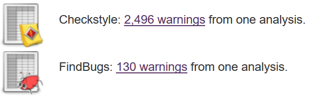
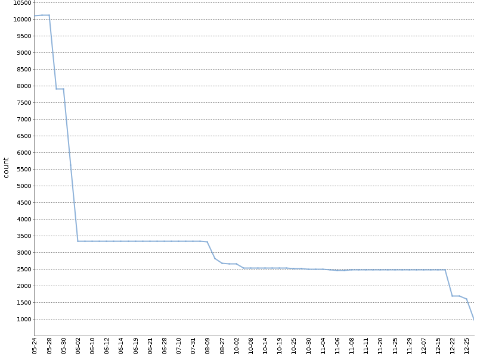

{kind=link}
def halts(f):
# false, если программа зависает
# . . .
def g():
if halts(g):
while(True):
passНепрерывный статический анализ
Что такое статический анализ?
Wikipedia: «Анализ программного обеспечения, производимый без реального выполнения исследуемых программ».
Здравый смысл: Любая проверка исходного кода, которая может быть выполнена в том же окружении, что и компиляция.
О продаже единорогов
Чего в принципе не могут анализаторы?
Проблема останова
Зависнет или остановится?
Теорема Райса
Вычисляет ли функция квадрат числа?
def is_a_squaring_function(f):
# true, если функция вычисляет квадрат
# . . .
def halts(f):
def t(n):
f()
return n * n
return is_a_squaring_function(t)Статический анализ не найдёт даже такое
Все
Null Pointer Exception(если у вас нет Null Safety в языке)Все
Attribute Not Found Exception(если у вас динамическая типизация)
…не говоря уж о менее тривиальных вещах.
Не волшебный единорог!
Обыкновенная лошадь

Источник: Энциклопедия Брокгауза и Ефрона
{kind=link}
Статический анализ в широком смысле слова
Проверка стиля кодирования (checkstyle, flake8)
Проверка синтаксиса ресурсных файлов (xmllint, YAMLlint, JSONLint)
Компиляция! (
ansible --syntax-check,terraform validate)Снова компиляция! (compiler warnings)
Проверка правописания
Конфигурационные тесты
Как с этим жить?
Однократное применение анализа бессмысленно
Анализ должен производиться непрерывно и быть частью конвейера сборки/поставки
Continuous Delivery Book
 |
|
Типовой конвейер сборки
статический анализ
компиляция
модульные тесты
интеграционные тесты
UI тесты
ручная проверка
Пресловутая Пирамида Тестирования

Источник: Martin Fowler, Test Pyramid
Пирамида как Фильтр Дефектов
Где тут статический анализ?
Источник: Noah Sussman
Многоступенчатый фильтр
Каждый следующий каскад отсеивает всё более мелкую фракцию загрязнений

Источник: Wikimedia Commons
{kind=link}
Случай из практики
resource.json
{
"key": "value with "unescaped quotes" "
}→ Падают все UI тесты, по причине Javascript-ошибки при инициализации UI
→ Добавляем JSONLint. Исправляем unescaped quotes. PROFIT
find . -name \\*.json -print0 | xargs -0 -n1 -t jsonlint -qКак быть с Legacy-кодом?

Quality Gates по результатам статического анализа
Пороговое количество находок
(не работает).
Игнор старых находок, не пропускание новых
(трудно реализуем, есть не везде).
«Метод храповика»
(прост в реализации и just works).
Храповик
Штука, позволяющая движение
только в нужную сторону
Храповик на Jenkins
Формируем метаданные следующего вида:
# warnings.yml
celesta-sql:
checkstyle: 434
spotbugs: 45
celesta-core:
checkstyle: 206
spotbugs: 13
celesta-maven-plugin:
checkstyle: 19
spotbugs: 0
celesta-unit:
checkstyle: 0
spotbugs: 0Подсчёт основан на XML-выводе анализаторов
private Map countModule(prefix) {
def text =
new File("${prefix}/target/checkstyle-result.xml").text
def checkstyle = new XmlSlurper().parseText(text)
def csCount = checkstyle.file.error.size()
text = new File("${prefix}/target/spotbugsXml.xml").text
def bugCollection = new XmlSlurper().parseText(text)
def fbCount = bugCollection.BugInstance.size()
[checkstyle: csCount, findbugs: fbCount]
}Скачиваем данные о последней сборке
def server = Artifactory.server 'ART'
def downloadSpec = """
{"files": [
{
"pattern": "warn/${project}/*/warnings.yml",
"build": "${project} :: dev/LATEST",
"target": "previous.yml",
"flat": "true"
}
]
}"""
server.download spec: downloadSpec
oldWarnings = readYaml file: 'previous.yml'Шаг храповика
stage ('Ratcheting') {
def warningsMap = countWarnings()
writeYaml file: 'target/warnings.yml', data: warningsMap
compareWarningMaps oldWarnings, warningsMap
}Упавшая проверка
Упавшая проверка
Храповик: работа за полгода

Checkstyle warnings, Celesta project
Проверка правописания
Запускайте aspell в не-интерактивном режиме
Храните пользовательский словарь в проекте
Проверка правописания
Проверка документации:
for f in $(find . -name '*.adoc'); do \
cat $f | aspell --master=ru --personal=./dict list; done \
| sort | uniqПроверка литералов и комментариев:
for f in $(find . -name '*.java'); do \
cat $f \
| aspell --mode=ccpp --master=ru --personal=./dict list; done \
| sort | uniqУпавшая проверка на Jenkins (aspell)

Фиксируйте версии анализаторов!
Случай из практики: История одного исправления
Выводы
Статический анализ многолик
Статический анализ бесполезен при нерегулярном применении
Внедряйте анализ в качестве первого звена конвейера интеграции
Используйте метод храповика для установки quality gates
Ссылки
Humble, Jez; Farley, David (2011). Continuous Delivery: reliable software releases through build, test, and deployment automation.
И. Пономарев Внедряйте статический анализ в процесс, а не ищите с его помощью баги
А. Кудрявцев Анализ программ: как понять, что ты хороший программист
На этом всё!
Мой твиттер @inponomarev
Мой email ponomarev@corchestra.ru
Спасибо!